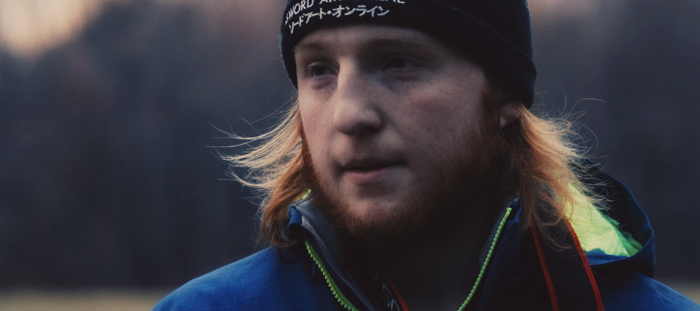

Hello friends and onlookers,
travelers and acquaintances,
Greetings:
My name is Schuyler Meyer — [ pronounced like "Sky—ler My—er" ].
Congratulations! You found it! Sending you a virtual high–five. The following paragraphs are something I debated placing into
my "about me" text. It's all true, but I feel that it, and myself, may be misunderstood, so I have hidden it for now. Plus, I got to learn
some more JavaScript in the process!
I want to note something about the 1st/3rd person "about me's". I know the "professional" way to write it is in 3rd person, but that just doesn't
sit with me. I am the one writing this, I'm not paying someone else to do it. It's my website that I'm creating... After scouring through numerous
other professionals' websites that I follow and admire, I found that about 9 out of 10 were written in 3rd person. But a couple of "big" names
had theirs written in 1st person, and so therefore, I will too. It just feels more personal to me, to write it in 1st person, and that is what
I want... currently. Maybe this all seems more like a personal blog post than an "about Schuyler" page, but then again, I'm not a robot, even if
I do act like one sometimes.
Now on a different topic, which was the original "hidden text" — based on a Google search I made back in middle school, my name's meaning originates
from the Dutch language and translates to "the scholar". And true to "mynamemeaning.com", I love to learn. I love to
learn new techniques, improve old methods, discover new ideas, anything and sometimes everything. Furthermore, something that may seem uneventful
to most, but what I am rather proud of, was the number of consecutive credits I completed while at Clarkson University. According to insider sources,
I apparently hold 2nd place for the most consecutive credits taken in Clarkson history, which was established in 1896, at 179 credits throughout
my time there, (the first–place person had 180). I did take one more class, to finish my second degree (that would have put me at 182), but
it was not consecutively.
Current: I am working as a freelance photographer, while trying to work my way into a game and / or web development role. In my free time, I'm always working
on either this website, or other coding projects, creating small games or simulations, or 3D modeling and animations, in addition to tinkering with mine
(and others) computers and other electronics.
For my dreams and aspirations, my ultimate goal is to create immersive experiences. Whether they be happy and exciting
for people to relive or escape to, more sensitive and emotional for people to better understand the struggles of others or to learn about
history past, or simply awe-inspiring and epic. The tools used could be any number of things, such as virtual or augmented reality, in the
form of a video game or animation, or a photograph. This is more general on purpose, as it could be accomplished in many different ways!
- Read More -
I, myself, am always fascinated and inspired by those that are able to create or capture the emotions of their subject and environment, in
any multitude of forms – game, movie, animation, book, photograph, etc. Whether I have reached a level of consistency yet or not is one thing,
but I would describe my artistic style as taking roots in a mix of both romanticism and photojournalism. (And yes, I know those are nearly contradictory
of one another). While I don't have a background in photojournalism per se, I am deeply inspired by the many photojournalists and their ability to capture
their subject. Similarly, I think my work also takes inspiration from the work of romantic painters of old (Albert Bierstadt, in particular, whose art
was often criticized for exaggeration), and in addition to, more specifically, the Hudson River School of Art "style". And likewise, in my work, I'm not adding,
nor taking away, what's there or not, I'm just *subtly* shaping the view. I'm trying to invoke an emotion, to tell a story, and to give someone an experience,
even with a single photograph. But of course, there is also such a thing as "too much", which is always a constant consideration. An example of someone's
work that I am deeply inspired by is Adam Glanzman
(@glanzpiece on Instagram) and Jean Fruth
(@jeanfruthimages on Instagram).
Naturally, the above does not only apply to my photography, but any and all of my artistic endeavors.
In regard to the more tangible and technical stuff, I recently graduated from Clarkson University in Potsdam, NY with a bachelor's degree in
software engineering and a second bachelor's degree in digital arts and sciences. While there, I worked on some really cool projects – both for
research and class as well as for fun. As one of the student photographers for the school (both marketing and athletic departments), I also did
a lot with photography. I probably missed out on one or more social events because I was always editing photos. And I even got to TA a photography
class as well. (To see the gritty details, see below. To see more of my photography, check out my photography site,
here.)
In addition to photography and other projects, I was also an officer (or E–Board as we called it) for four different student run clubs:
– Baseball Club (Historian, Photographer, Webmaster, Player)
– Video Game Club [CUGI – Clarkson University Gamers Initiative]
(Treasurer, Head and Founder of the Game Creation Committee)
– Photo Club (Secretary)
– Anime Club (Secretary)
– Men's and Women's Club Hockey teams (Team Photographer).
Before we move on, a note about this website – it is a personal one. A personal project of a personal website. I have created and written everything
on here from scratch, from the photos, logos, and backgrounds to all the underlying HTML, CSS, and JavaScript. While I do have a degree in software,
I had never taken any classes in HTML before – I self-taught myself HMTL / CSS / JavaScript through the many tutorials on the internet for this
website project. With that being said, as you scroll down, you may notice my software senior design project was created using HTML (among other things) –
while it is true that that project was my first experience with HMTL, there was no formal "teaching", my team was learning and piecemealing as we went along.
That project was more of a taste, where this personal website project is more of the full course.